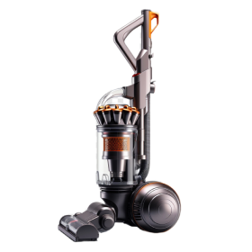
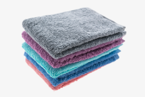
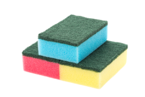

Что вы не знаете об уборке: как держать дом в чистоте
Держать дом в чистоте — это не только вопрос порядка, но и здоровья. Регулярная уборка помогает избавиться от пыли, грязи и бактерий, создавая комфортную и безопасную среду для жизни. Рассмотрим несколько простых правил, которые помогут поддерживать чистоту в доме и убираться эффективно.
Определите регулярность уборки
Каждая зона в доме требует разной частоты уборки. Чтобы поддерживать чистоту, составьте план:
Ежедневно: проветривайте комнаты, вытирайте кухонные поверхности, мойте посуду, выбрасывайте мусор;
Раз в неделю: пылесосьте и мойте полы, чистите сантехнику, вытирайте пыль с мебели;
Раз в месяц: мойте окна, стирайте занавески, чистите мебель;
Раз в три—шесть месяцев: проводите генеральную уборку (уборка в шкафах, чистка ковров и труднодоступных мест).
Используйте правильные инструменты и средства
Для каждого типа поверхности лучше подобрать свои чистящие средства. Например, для полов используйте мягкие моющие средства, а для плитки — специализированные составы, убивающие грибок и плесень. Пылесос с насадками поможет избавиться от пыли на мягкой мебели, а микрофибровые тряпки — идеальны для вытирания пыли и полировки.



Исппользуйте пылесос с насадками и микрофибровые тряпки
Поддерживайте чистоту на кухне
Кухня — одно из самых загрязняемых мест в доме, поэтому стоит уделить ей особое внимание:
Вытирайте поверхности после приготовления пищи;
Ежедневно очищайте плиту и мойте раковину;
Не забывайте раз в неделю чистить холодильник и протирать его внутри.
Поддерживайте порядок в прихожей
Прихожая — это первое, что видят гости, поэтому важно следить за ее чистотой. Убирайте грязь с обуви, вытирайте полы и проветривайте помещение. Специальные коврики у входа помогут сократить количество уличной пыли и грязи в доме.

197